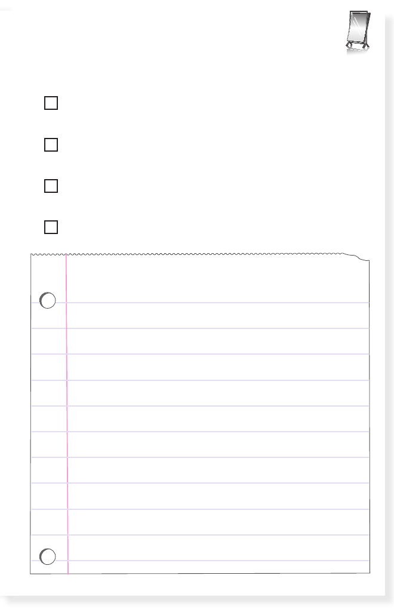

REFLECTION 1
Did I meet the objectives?
identify and explain how text features help me
use connecting strategy while reading
read aloud fluently and with expression
find and retell main topic and supporting details
13